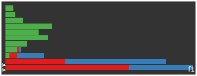

<< example 3 index real data example (with normalisation) >>
let's try the decomposition on some real data and see what patterns we find
we'll use a simple dataset of 100 articles taken from each of 3 quite different rss feeds;
first let's look at the feature strength for the first 50 features it seems pretty clear that the first feature is the major one
of the 5700 terms present in the corpus which terms are strongest for the first feature?
| rank | 1 | 2 | 3 | 4 | 5 | 6 | 7 | 8 | 9 | 10 |
| term | the | of | to | and | in | for | that | is | with | it |
| strength | 138 | 46 | 45 | 43 | 32 | 25 | 25 | 22 | 16 | 16 |
at the tail end there are the hapax legomenon with near zero scores including terms like... un, sydney, soa, jailed, worker, diplomat
to me this indicates a feature pretty strongly associated with common english constructs (apparently this is quite common in LSA) if nothing else then SVD is an extremely expensive way to do language determination :)
given we've seen that the features describe english terms we should expect it to be pretty arbitrary which documents are most strongly associated with this feature. let's see.
| feature 1 article strengths | |||||
| (articles near top most strongly associated) | |||||
|  | |||||
| autoblog | the register | perez hilton | |||
we can see the the first feature is most strongly, and exclusively, associated with the articles from autoblog articles for the register and perez hilton> are less associated (the bottom bars of the histogram)
if this feature corresponds to english constructs why is it so strongly associated only with autoblog? seems that the autoblog articles on average are much longer than the other two feeds.
| feed | total terms in corpus |
| autoblog | 19347 |
| perez | 4392 |
| the register | 2658 |
does this imply we'll have to normalise the data in some way first? we'll come back this ...
the terms most strongly associated on the +ve side with the second feature are quite similiar to the common language terms of the first feature
| rank | 1 | 2 | 3 | 4 | 5 | 6 | 7 | 8 | 9 | 10 |
| feature2 | and | of | in | that | for | is | the | on | gallery | you |
| strength | 0.45 | 0.43 | 0.27 | 0.20 | 0.17 | 0.16 | 0.13 | 0.12 | 0.12 | 0.11 |
but the terms most strongly associated on the -ve side do show something...
| rank | 5718 | 5719 | 5720 | 5721 | 5722 | 5723 | 5724 | 5725 | 5726 | 5727 |
| feature2 | opportunity | not | had | weekend | show | very | new | this | we | cher |
| strength | -0.99 | -1.00 | -1.00 | -1.00 | -1.00 | -1.01 | -1.02 | -1.02 | -1.05 | -45.98 |
cher? with an overwhelming strength of -45?!?!
in the same way there is a single term dominanting the second feature there is a single document, from perezhilton, that dominates the second feature
Cher! Cher! Cher! Cher! Cher! Cher! Cher! Cher! Cher! Cher! Cher! Cher! Cher! Cher! Cher! Cher! Cher! Cher! Cher! Cher! Cher! Cher! Cher! Cher! Cher! Cher! Cher! Cher! Cher! Cher! Cher! Cher! Cher! Cher! Cher! Cher! Cher! Cher! Cher! Cher! Cher! Cher! Cher! Cher! Cher! This weekend we had the very special opportunity to not only see Cher's new show ...
so in fact this second feature is not related to a type of article but just this particular article this makes me think even more that we need some normalisation, but let's continue for a few more features
features 3 and 4 are similiar to feature 2 in that they're associated again to a single article, this time one from autoblog.
| rank | 1 | 2 | 3 | 4 | 5 | 6 | 7 | 8 | 9 | 10 |
| feature3 | to | and | in | sales | 20 | comparechart | 34 | chrysler | 14 | 24 |
| strength | 14.3 | 14.1 | 6.75 | 6.0 | 4.8 | 4.7 | 4.0 | 3.5 | 3.4 | 3.3 |
| feature4 | the | sales | 20 | comparechart | 34 | 25 | 14 | 24 | in | audi |
| strength | 8.5 | 5.8 | 4.5 | 4.5 | 3.9 | 3.8 | 3.3 | 3.2 | 3.0 | 3.0 |
the autoblog article relating to these two features is by far the longest (in terms of raw chars) since it includes a nested table that wasn't parsed out very well by my original slurping script
| feature 3 vs feature 4 scatterplot | |||||
| autoblog | the register | perez hilton | |||
Filed under: By the Numbers Check it out. We've completely revamped By the
Numbers to convey more sales information than before in a much easier to digest
way. Now we'll be reporting both the change in monthly sales volume for each
brand and automaker as well as the change in their Daily Sales Rate or average
number of vehicles sold per day. On to the armchair analysis... Poor sales
continued through the month of August as only a handful of brands are able to
brag about increased sales. Nissan North America bucked the trend entirely
reporting a 13.6% gain for the combined brands of Nissan and Infiniti with each
marque reporting its own individual increases. Credit goes to VW (2.9%), as
well, which posted a solid number, and the BMW Group (1.0%), which barely
earned a positive increase in sales thanks to a strong 34.1% increase in MINI
sales. While GM (-20.4%), FoMoCo (-25.6%) and Chrysler LLC (-34.5%) sales were
all down in a big way, Toyota MoCo and Honda America were also not immune
falling 9.4% and 7.3%, respectively. In this environment, brands should
consider a single-digit drop a small victory considering the majority of brands
that fell by 10% or more. #comparechart { border: 2px solid #333;
border-collapse: collapse; } #comparechart td { padding: 3px; border: 1px solid
#ccc; vertical-align: top; margin: 0; line-height: 1.3em; font-size: 80%}
#comparechart th { font-size: 80%; font-weight: bold; text-align: left;
padding: 4px; background: #eee; } #comparechart th.mainth { font-size: 75%;
border-bottom: 1px solid #333; } #comparechart td.red { background-color:
#f08c85; } #comparechart td.green { background-color: #b3e2c4; } #comparechart
td.yellow { background-color: #ffffcc;} BY THE NUMBERS - August 2008 Brand Vol.
Total Vol. 8/08 Total Vol. 8/07 DSR Daily avg 8/08 Daily avg 8/07 Acura -8.2%
15,089 16,436 -8.2% 559 609 Audi -15.9% 6,406 7,620 -15.9% 237 282 BMW -4.1%
25,462 26,562 -4.1% 943 984 Buick -7.7% 17,833 19,324 -7.7% 660 716 Cadillac
-20.9% 15,405 19,481 -20.9% 571 722 Chevrolet -19.2% 185,080 229,012 -19.2%
6,855 8,482 Chrysler -44.2% 24,337 43,650 -44.2% 901 1,617 Dodge -24.6% 62,422
82,841 -24.6% 2,312 3,068 Ford -26.2% 133,088 180,282 -26.1% 4,929 6,677 GMC
-17.6% 42,194 51,222 -17.6% 1,563 1,897 Honda -7.2% 131,766 141,906 -7.2% 4,880
5,256 HUMMER -62% 2,160 5,677 -62% 80 210 Hyundai -8.8% 41,130 45,087 -8.8%
1,523 1,670 Infiniti 8.0% 11,076 10,252 8.0% 410 378 Jeep -43.7% 23,476 41,712
-43.7% 869 1,545 Kia -6.7% 25,065 26,874 -6.7% 928 995 Lexus -9.1% 29,281
32,199 -9.1% 1,084 1,193 Lincoln -8.5% 9,540 10,423 -8.5% 353 386 Mazda -4.4%
23,680 24,762 -4.4% 877 917 Mercedes-Benz -11.8% 18,507 20,980 -11.8% 685 777
Mercury -31.7% 8,393 12,296 -31.7% 311 455 MINI 34.1% 5,469 4,077 34.1% 203 151
Mitsubishi -29.3% 9,200 13,020 -29.3% 341 482 Nissan 14.2% 97,417 85,275 14.2%
3,608 3,158 Pontiac -38.3% 24,257 39,324 -38.3% 898 1,456 Porsche -44.9% 1,404
2,548 -44.9% 52 94 Saab -50.1% 1,503 3,011 -50.1% 56 112 Saturn -3.5% 20,385
21,117 -3.5% 755 782 Subaru 14.2% 18,932 16,573 14.2% 701 614 Suzuki -31.7%
6,083 8,916 -31.7% 225 330 Toyota -9.4% 182,252 201,272 -9.4% 6,750 7,455
Volkswagen 2.9% 22,292 21,655 2.9% 826 802 Volvo -48.8% 4,669 9,119 -48.8% 173
338 COMPANIES BMW Group 1% 30,931 30,639 1% 1,146 1,135 Chrysler LLC -34.5%
110,235 168,203 -34.5% 4,083 6,230 FoMoCo -25.6% 151,021 203,001 -25.6% 5,593
7,519 General Motors -20.4% 308,817 388,168 -20.4% 11,438 14,377 Honda America
-7.3% 146,855 158,342 -7.3% 5,439 5,864 Nissan NA 13.6% 108,493 95,527 13.6%
4,018 3,538 Toyota Mo Co -9.4% 211,533 233,471 -9.4% 7,835 8,647 August 2008
had 27 selling days versus 27 selling days for August 2007 UPDATE: Audi added
and Subaru's sales figures corrected. ? Permalink | Email this | Comments
ouch. even more ammo for some pre normalisation step
nothing really sticks out for these features...
the 10 most +ve and -ve documents for features 5 onwards are from autoblog with those articles dominating the edges of the feature space articles for the register and perez hilton cluster around 0. i suspect this is again an artifact of the longer autoblog articles.
we can see that in the following scatterplot matrix that autoblog entries encircle the others. i'm a sure a pretty vanilla svm would pick this up boundary if it's just document length that is the reason for this spread a much simpler classifier would be to just check the article length.
| feature 5 to feature 4 scatterplot matrix | |||||
|
|||||
| autoblog | the register | perez hilton | |||
so it really looks like we need to normalise the input in some way. let's try the most vanilla we can, just normalising on the doc length